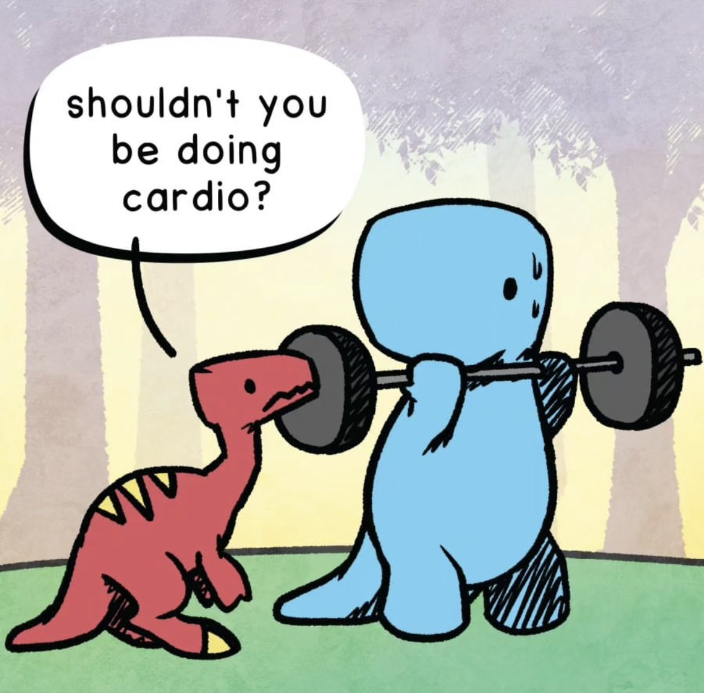
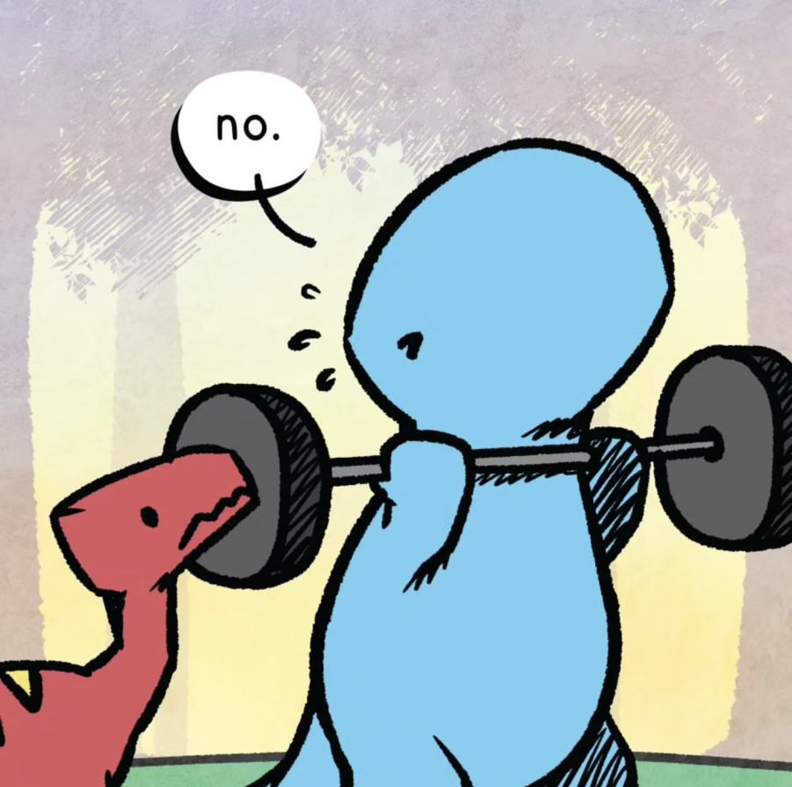

.accordion-flush class. This is the second item's accordion body. Let's imagine this being filled with some actual content..accordion-flush class. This is the third item's accordion body. Nothing more exciting happening here in terms of content, but just filling up the space to make it look, at least at first glance, a bit more representative of how this would look in a real-world application.Ya ha ha ha, you found me!
I think we can use badges for our project to let know the user about the coincidences in their search through our University page. We can let the user know what the career has to offer or posibilities for them to decide what's best for them. :)
Artistic Humanities Engineering Physics Business Musical Etc...Breadcumb could come in handy as we plan to use different pages for the information in our university website, allowing the user to know where they are located within the page can help them have a better experience with the navigation of the website.
I kind of use this type of container in my personal website for the countries page, I did it only using css but using this is easier than I thought back then (haha). I want to implement this in my personal website to showcase images and create a more dinamic enviroment.
For the project delivery I created something similar to this only using html and css, this new version could help me get the career info more organized than before and without having to battle to implent it.
I got the idea by looking at examples at the bootstrap homepage, I think I could use this kind of alerts for the personal website Using an alert could allow the user to know if they did everything right and the form was sent succesfully, or if it didn't.
This form was sent succesfully! You can relax, you did good :)
Aesthetic purposes